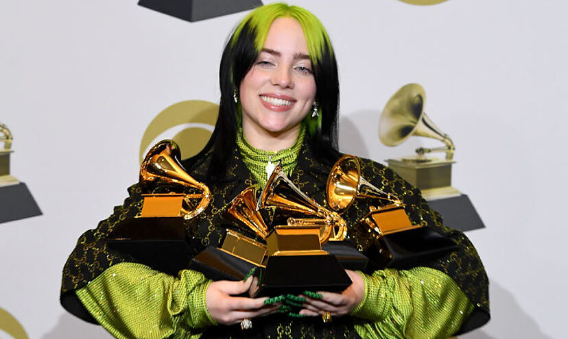
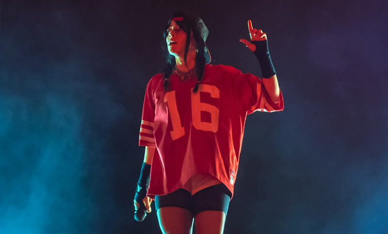

¿Quién es Billie Eilish?
Fecha de publicación: 13/09/23
Autor: YaatxD
Billie Eilish Pirate Baird O'Connell, es una cantante y compositora nacida en Los Angeles, California. Hija de la actriz Maggie Baird y del músico Patrick O’Connell, ha formado, desde su primer sencillo en 2015, una dupla bastante exitosa con su hermano Finneas, con quien comparte gran parte de los reconocimientos musicales. Como toda integrante en esta generación, incursionó con su primer sencillo Ocean Eyes en la plataforma de Soundcloud cuando apenas tenía 13 años, sin embargo, tal fue la sensación que tras llegar la versión a YouTube, solamente un año después, la cantante se viralizó y su éxito proliferó por todo el internet. Después de su triunfal debut con su primer sencillo, llegaron una serie de EP's entre los cuales destacó Bored, canción que formó parte de la banda sonora de la serie de Netflix 13 Reasons Why. Lo mejor aún estaba por llegar y en 2019 el multipremiado When We All Fall Asleep, Where Do We Go? desató sensación con seis nominaciones a los Grammy 2020, de los cuales ganó cinco, destacando Mejor Artista Nuevo, Mejor Canción y Grabación del Año (por Bad Guy), Mejor Álbum Vocal Pop y Álbum del Año; distinción que la convirtió en la artista más joven en levantar el galardón, y que, en conjunto, vieron emerger a Billie Eilish como la segunda artista en ganar las cuatro categorías generales en una sola velada, así como la distinción de contar con el álbum femenino más premiado de la historia (junto a 21, de Adele).
Su salto a la fama
Billie fue educada en el hogar durante la mayor parte de su infancia, pero eso no le impidió participar en actividades extracurriculares. Le encantaba actuar en películas caseras y también cantaba y bailaba cada vez que encontraba la oportunidad. Cuando cumplió 8 años, se unió a un coro y cantó con ellos durante tres años. Cuando tenía 11 años, ya escribía y componía canciones propias. También hizo varios cortometrajes. Los filmó en una cámara y los editó en "iMovie", la aplicación de edición de video de Apple.
Aparte de la actuación y la música, el baile era otra de sus pasiones. Tomó clases de baile en sus primeros años de adolescencia. Con una gran cantidad de habilidades, su objetivo era hacer una gran carrera en el mundo del espectáculo.Su hermano mayor tenía una banda propia. Había escrito una canción llamada "Ocean Eyes" y le pidió a su hermana que la grabara con su voz. Esta canción accidental resultó ser el gran éxito para Billie e impulsó su carrera.
La canción "Ocean Eyes" se grabó en octubre de 2015. Inicialmente estaba destinada a las clases de baile de Billie. Le entregó la canción a su maestra de baile y quiso que apareciera en su próxima rutina de baile. La canción resultó ser buena, y los hermanos decidieron que debía estar en la plataforma de intercambio de música "SoundCloud".
Escuchar "Ocean Eyes" de Billie.La canción se cargó en "SoundCloud" a principios de 2016 y, en marzo, se lanzó el video musical. La canción se disparó y registró más de 10 millones de visitas en un corto período de tiempo. Este éxito fue inesperado y dio paso a muchas más versiones. En noviembre de 2016, se lanzó un video musical con Billie bailando con la canción. Resultó ser otro éxito.
Varios sellos discográficos importantes se adelantaron para comprar los derechos de la canción. La canción fue lanzada en todo el mundo por "Darkroom" e "Interscope Records". Inmediatamente se convirtió en un éxito crítico y comercial. Hacia finales de año, Billie lanzó otro sencillo, "Six Feet Under".
Inspirado por el éxito de su single debut, 'Ocean Eyes', Billie grabó cuatro remixes de la canción y los compiló en un EP titulado 'Ocean Eyes'. Todos los remixes se convirtieron en grandes éxitos y le dieron el coraje suficiente para continuar conproyectos futuros.
En febrero de 2017, Billie lanzó el sencillo "Bellyache", que fue producido y coescrito por su hermano. El video musical de la canción, dirigido por Miles y AJ, fue lanzado en marzo de 2017. Luego, grabó una canción titulada "Bored", que se incluyó en la banda sonora oficial de la famosa serie de Netflix "13 Reasons Why". Se lanzaron dos sencillos más,"Watch" y "Copycat". En julio de 2017, Billie anunció su EP debut muy esperado, "No me sonrías".
Antes del lanzamiento oficial del EP, lanzó dos singles incluidos en el mismo, "My Boy" e "Idontwannabeyouanymore". Antes del lanzamiento del EP, agregaba nuevas canciones todos los viernes. El EP finalmente se lanzó el 12 de agosto de 2017.
